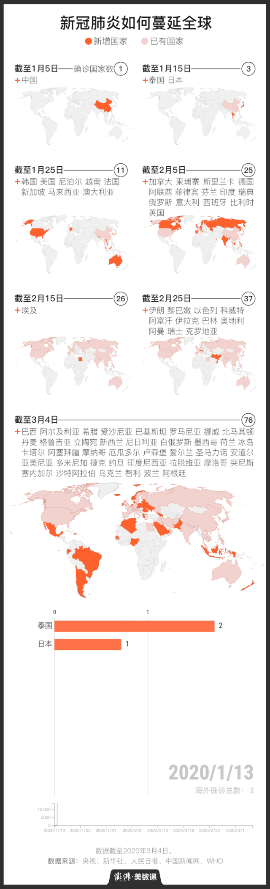
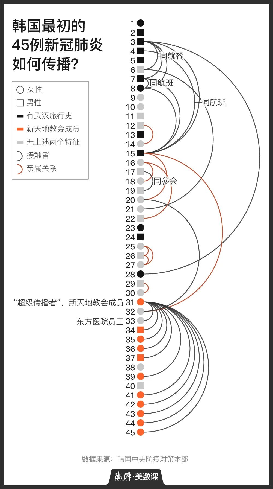
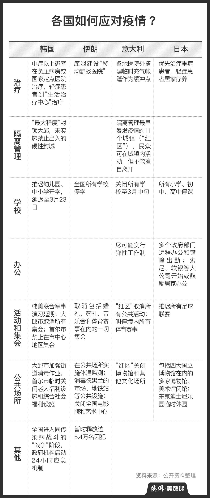

290人议会23人确诊！伊朗增产医疗用品，囤积走私或处极刑
原文链接 备份链接 3月2日，伊朗伊斯法罕Goltash公司的手部消毒凝胶生产线。图片来源：法尔斯通讯社 记者 ：潘金花 “ 伊朗司法部发言人称，若相关囤积走私案件被裁定涉及腐败，被告人或将面临最长20年的监禁，甚至死刑。 ” 77例死 …
以下文章来源于澎湃美数课 ，作者澎湃美数课
[
澎湃美数课
数字是骨骼，设计是灵魂。澎湃新闻美数课栏目出品。](#)
澎湃新闻记者 蒋馨尔 王亚赛
1月5日，湖北武汉，一位61岁的女性开始发热。3天后，她将跟随旅行团直飞泰国。1月13日，这位中国女性在泰国被确诊感染新冠病毒。这是目前人们所知新冠肺炎海外传播的起点。
3月4日，新冠肺炎的海外传播发酵近两月，六大洲、76个国家先后发现了新冠病毒的“足迹”。截至3月4日24时，除中国外，13753例病患被先后确诊，232人因此失去生命。
这一切是如何开始的？澎湃新闻（www.thepaper.cn）通过一组地图进行回顾。1月，亚洲多国陆续出现输入性病例，疫情继而蔓延至北美、欧洲和大洋洲。2月上中旬，除了疫情暴发的“钻石公主”号，新冠病毒入侵脚步一度趋于缓和，2月1日至20日，仅攻破4个国家。2月20日后，韩国、意大利、伊朗疫情不断升级，全球步入新一轮疫情扩张期。

从1例到13753例，从1国到76国，除了总括性数据，我们还能发掘哪些不容忽视的传播模式和应对方法？对此，澎湃新闻寻找4组切片，韩国的社区传播、伊朗和意大利的跨国传播、流浪邮轮上的不确定传播以及各国政府抗疫行动，试着回顾全球疫情演变过程。
社区传播，陡然加速
疫情发展至今，新冠病毒的传播方式已经从境外输入过渡到了社区传播和集中感染，多国开始报告传染途径不明的确诊病例，确诊人数也一路攀升。在全球加速的社区传播中，韩国可以说是最典型的国家之一。
韩国国内的社区传播，最初是在2月17日被注意到的。这一天，大邱市一名60岁的女性被确诊，这是韩国确诊的第31号病例。她是大邱市新天地教会的成员，在确诊之前，曾四次前往当地的新天地教会参加活动，其中两次是在出现症状之后，与其同属同一空间者前后达到1000多人。
第二天，韩国新确诊了12位与“第31号病患”有过接触的新冠肺炎患者，其中1人为东方诊所的员工，其余11人都是新天地教会的成员。更多新天地教会的信徒在后期被确诊，疫情也由最初的大邱市，蔓延至韩国多地。

跨国传播，全球蔓延
社区传播加速的同时，新冠病毒在国与国之间传播加剧。意大利、伊朗是现阶段跨国传播最典型的海外国家，欧洲、中东乃至美洲的防疫压力因此倍增。
根据澎湃新闻（www.thepaper.cn）的不完全统计，截至3月3日24时，已有37个国家出现与意大利相关的新冠肺炎病例，其中22个国家的首例新冠肺炎由意大利输入。这些确诊患者或是近期去过意大利，或是近期去过意大利的确诊患者的妻子、儿子、兄弟、同事和朋友。
伊朗的情形也是类似，从伊朗返回的旅行者、差旅者、探亲者叩开了18国大门，近在相邻的阿富汗，远至加拿大和新西兰，126例与伊朗相关的新冠肺炎被确诊。卫生条件并不理想的中东各国抗疫局面由此升级，巴林、科威特、伊拉克等国与伊朗有关的确诊病例人数众多。

值得一提的是，来自意大利和伊朗的输入性病例，也开始在中国出现。
3月2日，著名侨乡浙江丽水青田报告了一例境外输入病例。患者王某在意大利贝加莫担任餐厅服务员。2月16日起，王某出现咳嗽、头痛等症状，2月26日出发回国，途经莫斯科和上海，3月1日晚在青田确诊。第二天，与王某同行返回中国的6名亲友和餐厅同事依次确诊。另一位餐厅同事，搭乘不同航班回国，也在浙江被确诊。而仅在几天之前，丽水市刚刚庆祝17名新冠肺炎确诊病例全部出院，成为浙江首个清零的地级市。
流浪邮轮，谁为传播买单
区别于落在地面的社区传播和跨国传播，搭载多国乘客的国际邮轮，在疫情期间难靠岸、难上岸，为新冠病毒的海外传播制造了不少不确定因素。
海上邮轮环境密闭且人口集中，再加上中央空调和下水管道可能带来的传染风险，只要存在一例确诊患者，其他人很难全身而退。在下船疏散过程中，如果防疫措施不到位，很可能对本国造成输入性感染。获准下船的海外乘客一般搭乘航班回国，考虑到核酸假阴性的存在，这种回流可能带来更大规模的全球传播。
豪华邮轮“钻石公主”号发现有一例下船乘客确诊新冠病毒后，于2月3日提速赶到日本横滨港，没想到迎接它的，是在港口停船隔离16天的安排。在这期间，船上确诊人数越来越高，600余名确诊乘客先后下船送医。

直到2月19日，“钻石公主”号上首批核酸阴性且无发热的乘客获准下船。这些乘客下船后，有人再度确诊，比如2月22日央视报道，一名2月19日下船的日本女性乘客确认感染。目前，来自“钻石公主”号确诊人数已超700人。
而另一艘邮轮“威士特丹”号被多地港口拒绝入境，在海上漂了2周。2月14日该船部分乘客最终在柬埔寨西哈努克城下船。柬埔寨首相洪森亲自到港口欢迎，全程未戴口罩。洪森还邀请邮轮乘客逛逛金边，他在Facebook上表示：“逛逛城市比待在令人感到无聊或害怕的旅馆房间更好”。不过，这种热情相待的做法事后被证明太过冒险。2月15日，一名首批上岸的83岁美国籍女乘客，在马来西亚被确诊感染新冠病毒。

像这样漂在海上的流浪邮轮并非孤例。就在3月4日，美国加州州长加文·纽瑟姆在新闻发布会上表示，搭载过加州首位新冠死亡病例的“至尊公主”号上，有11名乘客和10名船员“出现症状”。这一载有数百名乘客的邮轮目前并未靠岸。加州方面正与美国疾控中心和当地的医疗保健合作伙伴共享邮轮乘客名单，美国疾控中心正对邮轮情况进行调查。
各国行动，抗疫镜鉴
在疫情发展前期，一些国家因为国情、政治生态、社会文化的影响，防疫举措左右摇摆。不过随着全球疫情进入迅猛扩张期，没有一个国家能完全置身事外。眼下，虽然没有各国需要完全遵循的疫情应对守则，但一些举措已经成为全球共识。
韩国、伊朗、意大利、日本这四个海外新冠确诊病例最多的国家正在做些什么？从澎湃新闻的梳理来看，一方面是治，一方面是防。在治疗上，分级就医、新建医院是共通手段。在防疫上，通过隔离、停学、远程办公，取消大型集会、关闭公共场所等方式，减少人群集聚带来的病毒传播。

未来两周，可能出现全球疫情扩大或平息的关键拐点。在新冠肺炎这一场全球公共卫生事件中，没有桃花源和诺亚方舟，各国公共医疗防线将迎来严酷挑战。毕竟，病毒没有国界。
戳这里进入
“全国新型冠状病毒感染病例实时地图”↓↓↓
本期编辑 周玉华
推荐阅读


原文链接 备份链接 3月2日，伊朗伊斯法罕Goltash公司的手部消毒凝胶生产线。图片来源：法尔斯通讯社 记者 ：潘金花 “ 伊朗司法部发言人称，若相关囤积走私案件被裁定涉及腐败，被告人或将面临最长20年的监禁，甚至死刑。 ” 77例死 …
原文链接 备份链接 6480 来源：正和岛 作者：叶青 03-04正在打榜，当前第1 1、武汉疑似病例降到234例 3日，全国新增确诊病例119例，新增死亡病例38例（湖北37例，内蒙古1例），新增疑似病例143例。截至3日，全国现有确诊 …
原文链接 备份链接 国内单日新增病例有望很快落到两位数，全国治愈率跨过60%节点。新冠疫情在海外大部分国家和地区（包括美国）还处于暴发的早期阶段。 文 |《财经》数据研究员徐进 图 |《财经》视觉中心 编辑 | 郝洲 一、 国内多地迎来 …
原文链接 备份链接 随着新冠病毒在世界范围内快速传播，全球大流行的趋势似乎无可避免。但在要不要宣布全球大流行的问题上，依然存在两极的看法。 日内瓦当地时间 3 月 3 日，世界卫生组织对外发布了最新一期新型冠状病毒肺炎情况发展的每日报告。 …
原文链接 备份链接 图片来源：视觉中国 记者：牛其昌 “ 随着国内新增确诊病例数明显减少，多地已纷纷下调疫情应急响应等级。但鉴于全球新冠肺炎疫情防控形势的严峻性，疾控部门已经把境外疫情评估纳入工作范畴。 ” 新冠肺炎疫情正在全球范围内加速 …